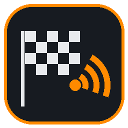
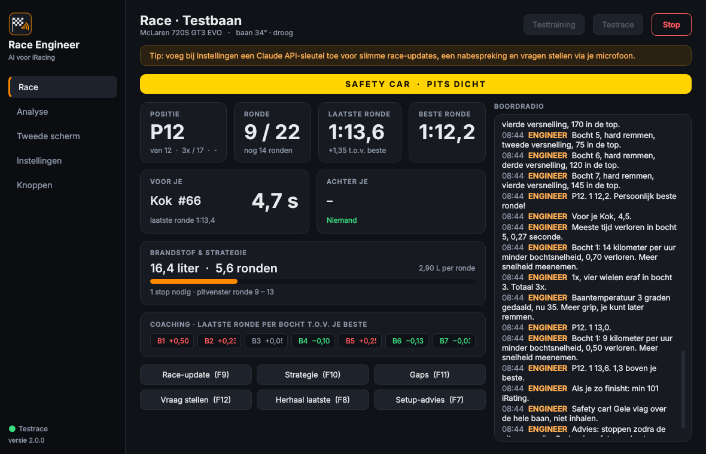
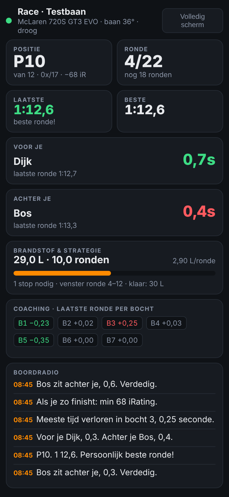

AI Race EngineerHij praat met je via je headset: wie er voor en achter je zit, wanneer je moet stoppen, wat je per bocht kunt verbeteren en wat je moet doen na een spin. In het Nederlands.
⬇ Download voor WindowsENGINEERVoor je Jansen, 1,2. Je pakt 0,3 per ronde, over 4 ronden zit je erop.
ENGINEERSafety car! Advies: stoppen zodra de pits open zijn.
ENGINEERPitstop staat klaar: 28 liter, vier nieuwe banden.
ENGINEERBocht 5: 15 meter te vroeg geremd, 0,38 verloren. Rem later.
ENGINEERSpin. Wacht! Bos komt nu langs… Vrij. Je kunt gaan.
Gap en trend naar de auto voor en achter je, waarschuwing als iemand dichtbij komt, en iRating en licentie van je tegenstanders.
Brandstof per ronde, pitvenster, waar je terugkomt na een stop. Hij zet je pitstop zelf klaar in iRacing.
Rempunt, bochtsnelheid en gas t.o.v. je beste ronde. Herkent onder- en overstuur, met setup-tips.
Herkent spins, waarschuwt voor verkeer, safety car met pit-advies, gele, blauwe en zwarte vlag.
Op een onbekende baan zegt hij vóór elke bocht hoe hard je remt en in welke versnelling.
Live dashboard op je telefoon of iPad naast je stuur. Gewoon een QR-code scannen.


Voor de slimste functies (race-updates in eigen woorden, vragen stellen met je stem, nabespreking) heb je een eigen Claude API-sleutel nodig van console.anthropic.com. Zonder sleutel werkt al het andere ook.